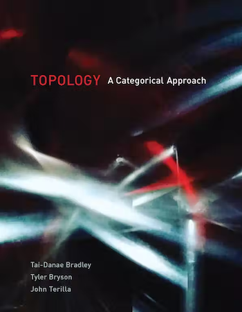

John Terilla - Mathematician
Topology, AI, and Quantum
I work at the interface of algebraic topology, artificial intelligence, and quantum physics. I’m the Executive Officer of the PhD Program in Mathematics at the CUNY Graduate Center and I’m involved with the Initiative for Theoretical Sciences.
Selected Papers
- From language models over tokens to language models over characters — with T. Vieira et al.
- The foundations of tokenization: statistical and computational concerns — with J.-L. Gastaldi et al.
- The structure of meaning in language — with T.-D. Bradley & J.-L. Gastaldi.
- An enriched category theory of language: from syntax to semantics — with T.-D. Bradley & Y. Vlassopoulos.
- Modeling sequences with quantum states: a look under the hood — with T.-D. Bradley & E. M. Stoudenmire.
- Probabilistic modeling with matrix product states — with J. Stokes.
- Language as a matrix product state — with V. Pestun & Y. Vlassopoulos.
- Homotopy probability theory on a Riemannian manifold and the Euler equation — with G.-C. Drummond-Cole.
- Algebras over cobar coFrobenius — with G.-C. Drummond-Cole & T. Tradler.
- Quantum backgrounds and QFT — with T. Tradler & J.-S. Park.
- Smoothness theorem for differential BV algebras —
PhD Students
- Samantha Jarvis (2025). Thesis: A Novel Closed Monoidal Structure on the Nucleus of a Profunctor.
- Tyler Bryson (2023). Thesis: An Explicit Construction of Sheaves in Context.
- Tai-Danae Bradley (2020). Thesis: At the Interface of Algebra and Statistics.
- Joseph Hirsh (2013). Thesis: Derived Noncommutative Deformation Theory.
- Gabriel Drummond-Cole (2010). Thesis: Homotopy Batalin–Vilkovisky algebras, trivializing circle actions, and moduli space.
Topology — A Categorical Approach

A graduate-level textbook that presents basic topology from the perspective of category theory. Chapter PDFs are available open access.